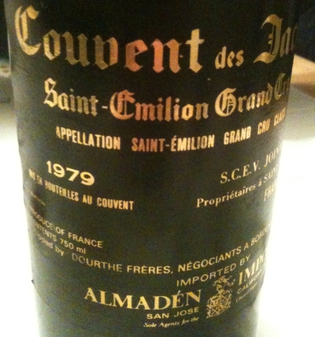

|
Europe >
France >
Bordeaux >
Saint-Émilion Grand Cru Classé >
Couvent des Jacobins >
Saint-Emilion Grand Cru Classé
1979 Saint-Emilion Grand Cru Classé
Couvent des Jacobins
Gironde, France

Mis en bouteilles au couvent.
Joinaud-Borde propri�taires.
Price: $36
12.8% alcohol
750 ml

2011 tasting - A transparent red with a deep, oaky bouquet, this wine has a sweet, dry flavor coupled to an excellent finish.
2010 tasting - A cloudy red with an aged bouquet, this wine has a dry, well-aged flavor coupled to a puckeringly chewy
aftertaste.
2009 tasting - This Saint-Emilion is quite a transparent red with a strong, oaky bouquet. The flavor is sharp with
concentrated fruits and a dry finish. Surprisingly little decanting required.
|